EEG6: Differentiating epileptiform activity from EEG elements that just look like epileptiform activity but are not
Spotting elements in the EEG which look like epileptiform activity is relatively easy because they are sharply-contoured, they stand out,
they break the rhythm... It would be easy to just call any suspicious EEG element as epileptiform activity. Unfortunately,
overreading EEG elements which are not epileptiform activity as pathologic can have serious consequences for the patient. Being able to
recognize when a suspicious EEG element is not epileptiform activity is as important as recognizing when it is epileptiform activity.
In this post you will learn some basic approaches to dismiss some suspicious EEG elements as non-epileptiform.
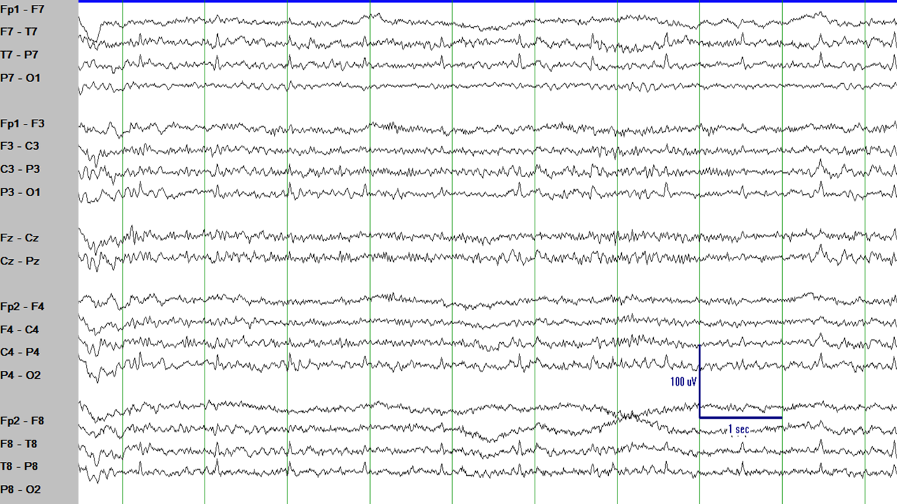
There are some suspicious activity in the left temporal region (look at channels F7-T7 and T7-P7).
It is sharply-contoured. It breaks the rhythm. It also appears frequently, regularly, like a ticking clock.
More or less once per second. Does it remind you of anything? What happens approximately once per second?
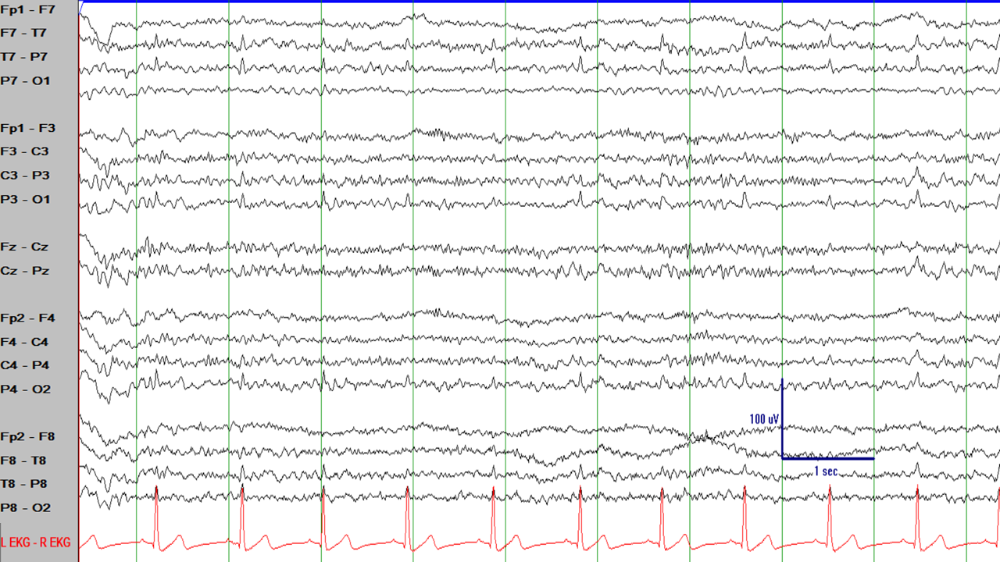
Same EEG segment as in the prior figure. What happens approximately 60 times per minute?
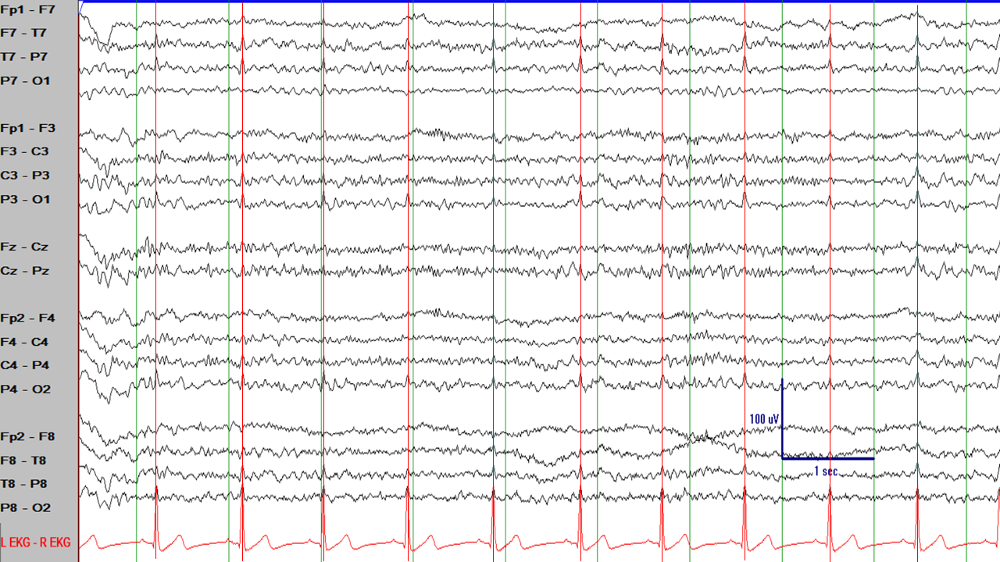
Same EEG segment as in the prior figure. These sharply-contoured EEG elements occurred at the same time that the QRS complex in the EKG channel and are,
therefore, EKG artifact, not epileptiform activity.
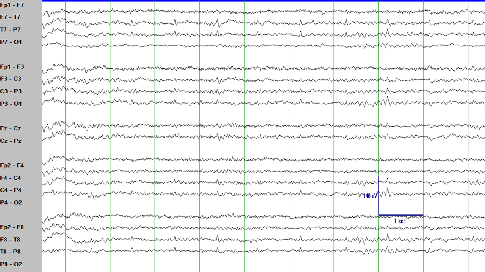
Another example. These ones appear even more convincing and sharply contoured.
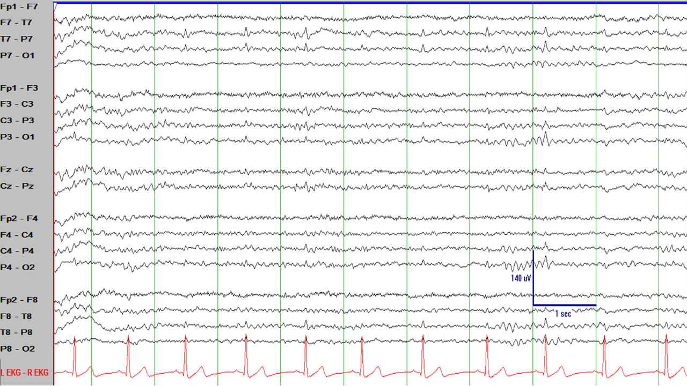
(Same EEG segment as in the prior figure). However, a quick look at the EKG channel shows that...
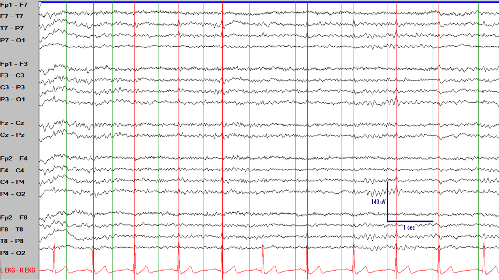
(Same EEG segment as in the prior figure). ...they appear at the same rhythm than the QRS in the EKG-->EKG artifact.
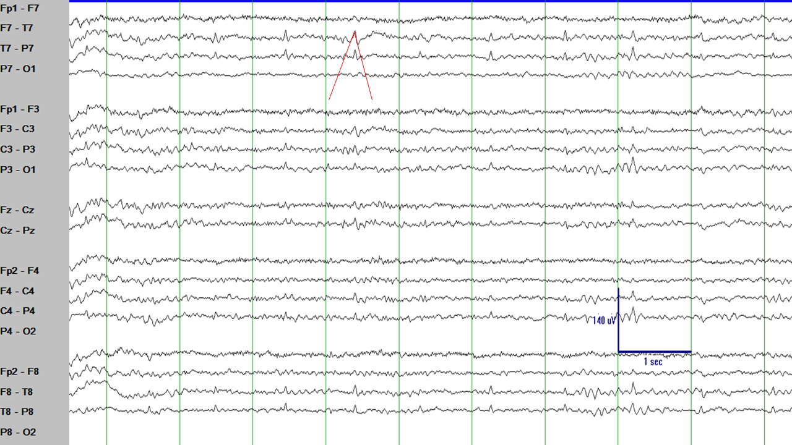
A more subtle point is that if one considers the two lines converging to form a sharply contoured peak
the first line is not steeper than the second line.
EKG artifact is just the transmission of electrical activity generated by the heart conduction system and which is picked up by the electrodes
placed in the head. Remember that the electrical activity generated in the heart conduction system is much higher in voltage than the electrical
activity generated in the brain, so the electrical activity from the heart can be seen in the head even if the generator is much farther away
from the EEG electrodes than the brain. Similar artifacts can be produced by electrical activity nearby like ICU machinery (ventilators, pumps, etc.)
or cell phones. The key is to find the rhythmicity and investigate if there is some electrical source of that rhythmicity around (or within) the patient.
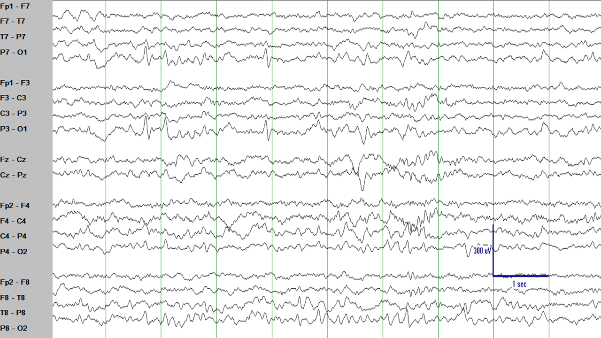
There are sharply contoured EEG elements at seconds 2 and 4 of this EEG segment and in the P7-O1 and P3-O1 channels.
They stand out and break the rhythm from the rest of the EEG. Are they epileptiform discharges? Maybe. However, there are a couple of things
which make these elements less likely to be epileptiform: 1) their voltage is relatively high, but there is very little electrical field
nearby (look at the channels T7-P7, C3-P3, and on the right side to the channels P4-O2 and P8-O2, would not you expect more electrical field there?), and 2) there is no
phase reversal (epileptiform discharges in a bipolar montage pointing to each other at the point of maximum negativity on the scalp).
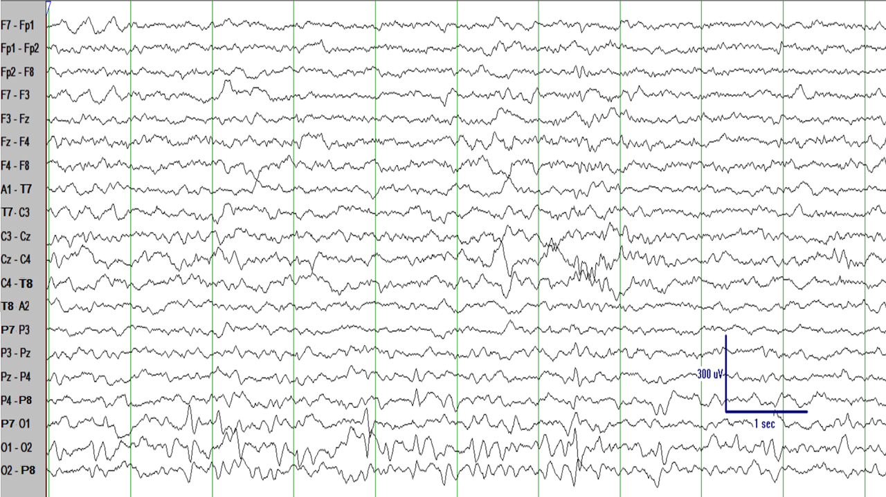
Same EEG segment as in the prior figure on a different montage (transverse bipolar montage).
There is still not a convincing electrical field. These elements are posterior occipital sharp transients
of sleep (POSTS), a normal variant.
Posterior occipital sharp transients of sleep (POSTS) are commonly seen in light sleep. They have a triangular
shape. They are completely normal, they are a normal variant. Do not overread them as epileptiform discharges.
A good way to recognize POSTS and not confuse them with epileptiform discharges is that they typically appear only
in light sleep: as the patient goes into stage II sleep the POSTS tend to disappear, which should make you suspicious because
most epileptiform discharges tend to become more frequent and prominent in stage II sleep.
What about the sharply-contoured elements in the next figure?
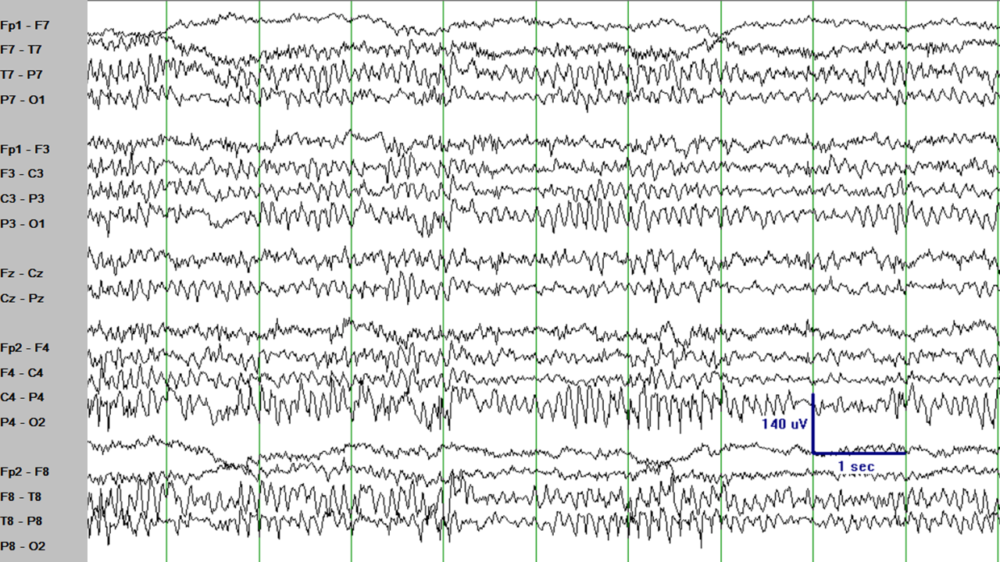
Some of the sharply-contoured elements in the P4-O2 and P8-O2 channels catch the eye, are sharply-contoured,
and even it can be argued that there is some field in the neighboring channels C4-P4 and T8-P8 channels and even in the posterior channels in the left
hemisphere. It looks like epileptiform activity. Right?
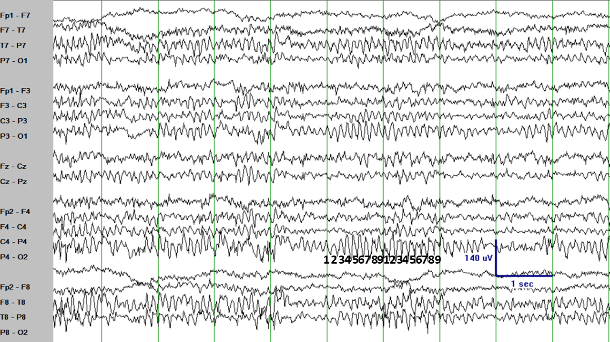
(Same EEG segment as in the figure above). However, there is something peculiar about these elements: they are very rhythmic. They occur
very regularly. They occur approximately 9 times per second and this rhythm does not change from second to second. Go ahead, cover part of the figure
and try to predict what comes next. These EEG elements do not break the rhythm. They are somewhat predictable.
When discharges in the EEG occur more than 5 times per second they are unlikely to be epileptiform discharges. Think that epileptiform discharges are
abnormal electrical discharges in the brain which disrupt the normal firing of neurons. After epileptiform discharges it takes a little bit for the brain
to recover and produce either a new epileptiform discharge or the normal EEG baseline rhythm. Think of it as another rule of thumb: if the EEG elements under
question are occurring 6 or more times per second and with a more or less regular rhythm they are unlikely to be epileptiform discharges. Also, if their
frequency and appearance is more or less the same every time, they are unlikely to be epileptiform discharges.
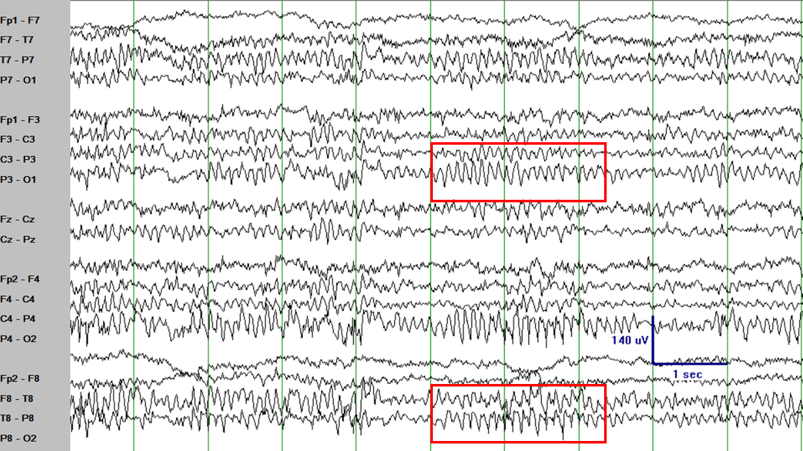
(Same EEG segment as in the figure above). The sharply-contoured elements here look just like the posterior dominant rhythm, just
sharper. In fact, this normal variant is called "sharp posterior dominant rhythm". Completely normal. Do not overcall them as epileptiform discharges.
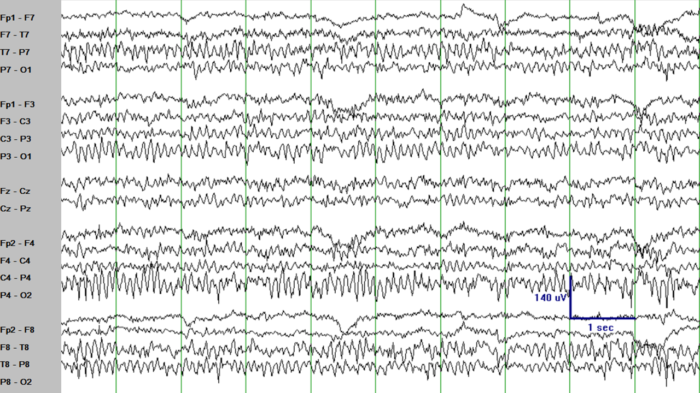
Another example of sharp posterior dominant rhythm. In this example it is even more clear that the rhythm looks sometimes sharper and
sometimes more like a typical posterior dominant rhythm without a clear limit between the two of them. Do not overcall them as epileptiform discharges.
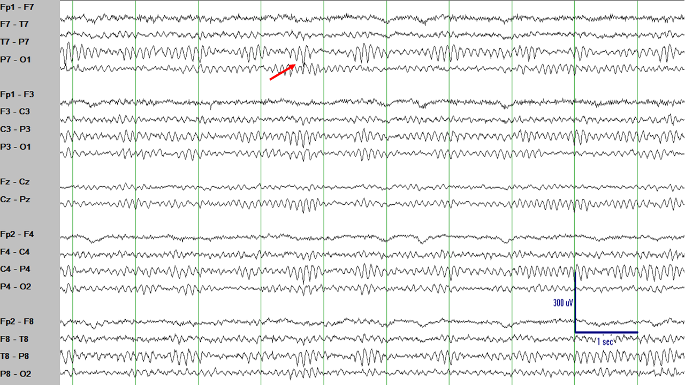
The posterior dominant rhythm can sometimes look sharper than usual. Sometimes it even appears as having a negative phase reversal
(sharply-contoured elements pointing against each other) as highlighted by the red arrow. The key to identify these elements as normal is that they do not
look much different than the other elements around them.
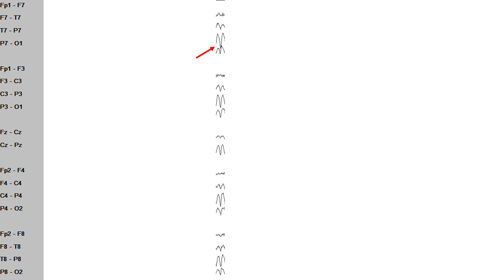
Considering that EEG element in isolation, it looks pretty sharply contoured, it even has an electrical field that makes anatomical sense.
Seeing that element alone would probably lead you to call it an epileptiform discharge...
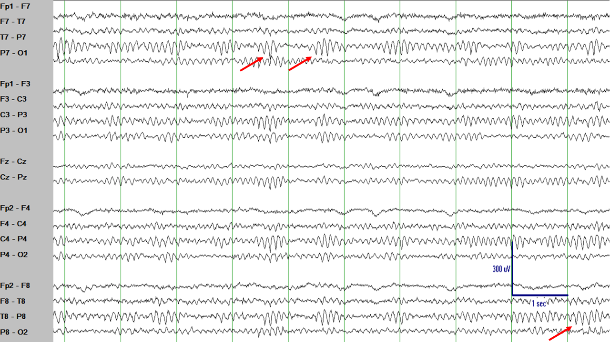
...but considering that EEG element in its context you realize that it looks pretty much the same as other EEG elements which are just part
of the posterior dominant rhythm. Therefore, you conclude that the EEG element which looked suspicious was just part of the posterior dominant rhytm.
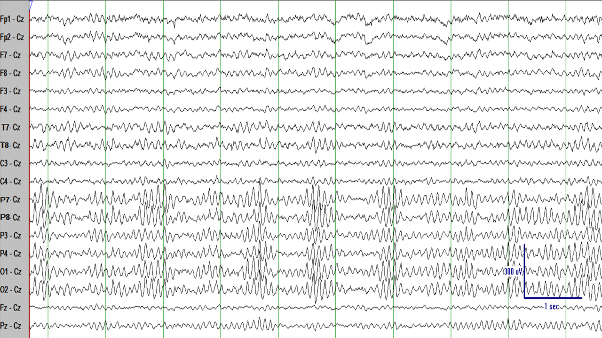
Same EEG segment than in the figure above in a different montage (referential montage with reference being the Cz electrode). In this
montage it becomes even more clear that there is no breaking of the rhythm, just more or less pronounced parts of the posterior dominant rhythm.
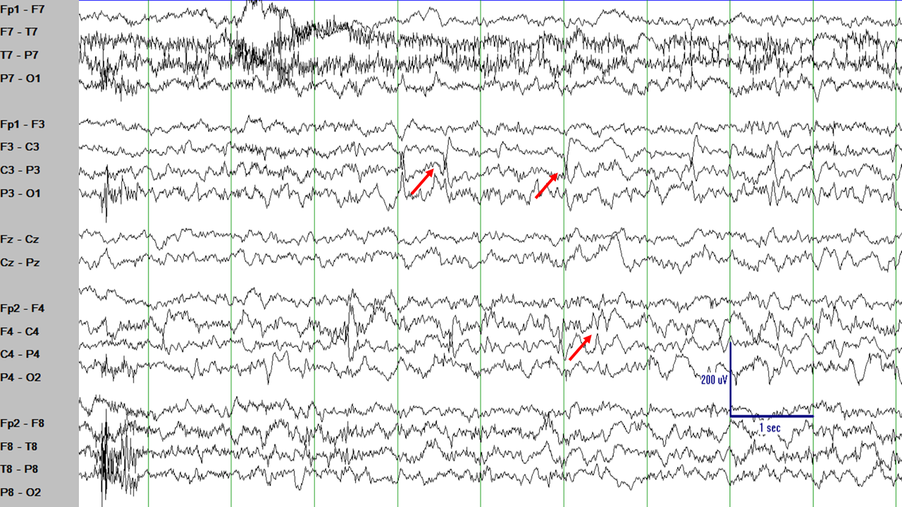
Compare the regular, rhythmic, predictable EEG normal variants in the images above with the C3 and C4 spikes in this EEG segment. The
spikes in this EEG tracing are different from the background and are not similar to anything else in the EEG normal rhythms.
The T8 electrode has a poor contact with the scalp and, therefore, it is "popping" frequently.
The F8-T8 channels has sharply-contoured elements which mirror the elements at the T8-P8 channel, but apart from those
two channels which contain the (bad) T8 electrode, none of that activity is seen elsewhere in the EEG. This is
electrode artifact.
SUMMARY
There are many normal variants and many artifacts in the EEG and you should not "overread" them as being epileptiform discharges.
When you suspect some EEG elements might be epileptiform discharges ask yourself:
"Do they occur rhythmically and their frequency is
6 Hz or higher?" Rhythmic activity with a regular frequency of 6 Hz or higher is unlikely to be epileptiform activity. Think about what
can be causing those rhythmic discharges, look at the EEG video (are there ventilators or pumps or other equipment around?)
"Do they have an
electrical field wich makes anatomical sense?" If the EEG element under question only involves one or two channels or the involvement happens
in channels which are not anatomically related then it is unlikely to be epileptiform activity.
"Does this suspicious EEG element occur
only in one of the phases of the sleep-wake cycle?" Generally, epileptiform activity tends to become more prominent and frequent in stages I and II
of sleep. Elements which only occur in a specific phase of the sleep-wake cycle and then disappear from the rest of the EEG are unlikely to be
epileptiform discharges.
"Are the sharply-contoured EEG elements similar to other normal EEG elements?" If the elements under consideration
are similar to normal EEG elements, probably they are also normal EEG elements.
You are learning more and more. Keep up the good work!